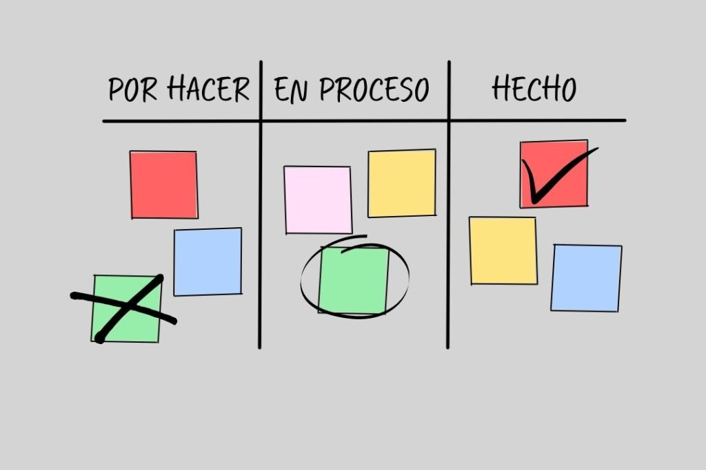

Bases de Ciencias De Computación
RGB

RGB es un modelo de color utilizado en la mayoría de los dispositivos electrónicos, como monitores,
cámaras digitales y escáneres. RGB significa Red (Rojo), Green (Verde), Blue (Azul), y se basa en
la combinación de estos tres colores de luz para crear una amplia gama de colores.
Cada componente de color puede tener un valor entre 0 y 255, estos valores determinan la intensidad que presentan, la luminosidad que reflejan y permiten visualizar
con facilidad las diferentes gamas.

KANBAN
¿Que es "Kanban"?
Kanban es una forma de ayudar a los equipos a encontrar un equilibrio entre el trabajo que necesitan hacer y la disponibilidad de cada miembro del equipo.
La metodología Kanban se basa en una filosofía centrada en la mejora continua, donde las tareas se “extraen” de una lista de acciones pendientes en un flujo de trabajo constante.
¿Kanabn es lo mismo que Scrum?
los equipos de trabajo que ejecutan Scrum lo hacen en tableros Kanban, sin embargo, aun siendo compatible con Kanban, Scrum es un marco diferente.
Si bien Kanban se centra en la mejora de procesos, Scrum generalmente se implementa para ayudar a los equipos a finalizar más trabajos y más rápido,
para hacerlo, Scrum organiza “sprints”, sesiones de trabajo de dos semanas con reuniones diarias y una cantidad determinada de trabajo a finalizar durante el ciclo de Scrum.

Trello
¿Que es Trello?
Trello es una herramienta visual que permite a los equipos gestionar cualquier tipo de proyecto y flujo de trabajo, así como supervisar tareas,
añade archivos, checklists o incluso automatizaciones: personalízalo todo según las necesidades de tu equipo.